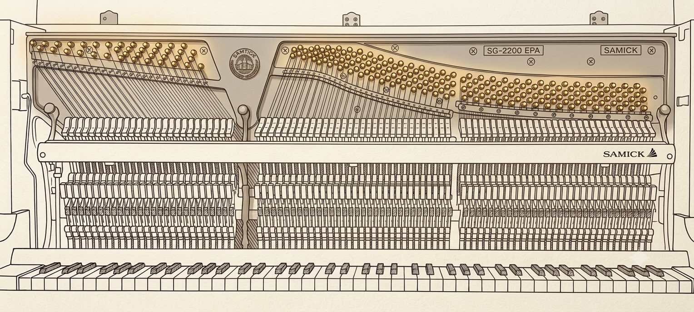

琴键与弦轴如何对应？
88 个琴键背后是不同数量的琴弦与弦轴。界面需要先把目标音与真实机械位置对应起来。
PIANO TUNING ASSISTANT
这是一套配合步进电机硬件使用的钢琴调律方案：从麦克风采集琴音，判断频率与拍音偏差，再把“拧紧、拧松或保持”转化为可执行的微调指令。

01 / THE PROBLEM
88 个琴键背后是不同数量的琴弦与弦轴。界面需要先把目标音与真实机械位置对应起来。
频率高低只是测量结果，真正要执行的是方向、幅度和停止条件明确的机械微调。
琴弦张力会相互影响。调节之后还需要重新击键、复检并确认结果是否稳定。
02 / GUIDED WORKFLOW
NEXT ACTION
找到 A4 对应弦组 在 88 键键盘上选择目标琴键，同时高亮内部结构图中的弦组与弦轴位置。03 / SYSTEM
04 / INSTRUMENT & HARDWARE

PREPARATION
同一音区常由多根琴弦共同发声。止音带用于暂时隔离非目标弦，让麦克风采集到更清楚的单弦信号。
项目已有素材 · 止音带安装教学05 / CURRENT SCOPE
06 / MY ROLE